0. 평가 개요
손으로 쓰고 → 말로 설명하는 구술평가입니다. 정답을 외워 쓴 것과 이해하고 쓴 것을 구별합니다.
자세한 구술 운영 방법은 4. 구술평가 운영 가이드를 참고하세요.
평가 구조
| Track | 유형 | 문항수 | 배점 | 평가 방식 |
|---|---|---|---|---|
| A | 객관적 채점 (계산·개념·해석·사고) | 13 | 45점 | 필기 + 구술 확인 |
| B | 키워드 서술형 | 5 | 25점 | 필기 + 구술 확인 |
| C | 과정 관찰 (수업 중 누적) | 체크리스트 | 30점 | 2~8차시 수업 관찰 |
차시별 출제 현황
| 차시 | 주제 | 관련 문항 | 배점 |
|---|---|---|---|
| 1차시 | 튜링 테스트, 중국어 방 | B-5 | ~5점 |
| 2차시 | 퍼셉트론, XOR, AI 겨울 | A-1, A-11, B-1 | ~12점 |
| 3차시 | 활성화함수, 비선형 | A-5, A-12, B-2 | ~11점 |
| 4차시 | 손실함수, MSE | A-2, B-4(일부) | ~5점 |
| 5차시 | 경사하강법, 학습률 | A-3, A-10, B-4(일부) | ~10점 |
| 6차시 | 역전파 | A-4, A-9, B-4(일부) | ~9점 |
| 7차시 | 토큰화, 임베딩 | A-6, B-3(일부) | ~9점 |
| 8차시 | 다음 토큰, 어텐션, 환각 | A-7, A-8, A-13, B-3 | ~13점 |
1. Track A: 객관적 채점 (45점, 13문항)
퍼셉트론 출력 계산
퍼셉트론은 뇌의 뉴런을 수학으로 옮긴 가장 단순한 기계입니다. 입력에 가중치를 곱하고 더한 뒤, 활성화함수를 통과시키면 출력이 나옵니다.
현지: "이 그림 봐. 퍼셉트론 구조도야. 입력이 두 개 있고 가중치랑 편향이 주어져 있어."
하임: "가중합을 먼저 구하고, 계단함수를 통과시키면 출력이 나오겠지?"
현지: "그래! 직접 계산해보자."
다음 퍼셉트론에 입력을 넣었을 때, 출력을 구해보세요.
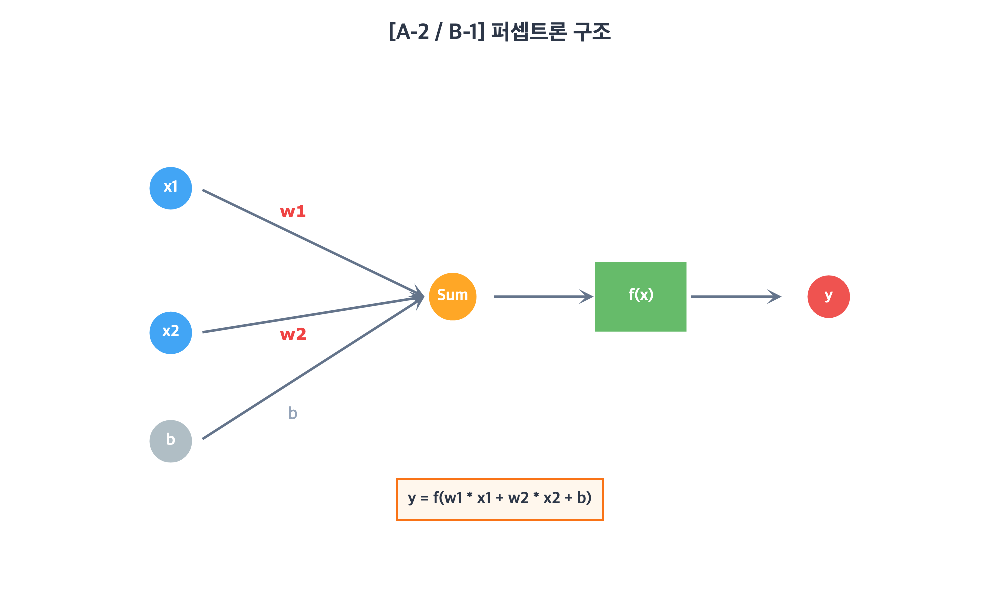
가중치: w₁ = 0.7, w₂ = -0.4
편향(bias): b = -0.3
활성화함수: 계단함수 (z > 0 → 1, z ≤ 0 → 0)
(1) 가중합 z = w₁x₁ + w₂x₂ + b 를 구해보세요. [2점]
(2) 활성화함수를 적용한 최종 출력 y를 구해보세요. [2점]
(1) z = 0.7 × 1 + (-0.4) × 0 + (-0.3) = 0.7 + 0 - 0.3 = 0.4
(2) z = 0.4 > 0 이므로, y = 1
- (1) 풀이 과정 + 정답 0.4 → 2점 / 과정 없이 정답만 → 1점
- (2) z>0 판단 + 정답 1 → 2점 / 정답만 → 1점
| 세트 | x₁ | x₂ | w₁ | w₂ | b | z | y |
|---|---|---|---|---|---|---|---|
| 기본 | 1 | 0 | 0.7 | -0.4 | -0.3 | 0.4 | 1 |
| α | 0 | 1 | 0.7 | -0.4 | -0.3 | -0.7 | 0 |
| β | 1 | 1 | 0.3 | -0.5 | 0.1 | -0.1 | 0 |
| γ | 1 | 0 | -0.2 | 0.6 | 0.5 | 0.3 | 1 |
- 가중합을 구하는 순서를 말로 설명해볼까요?→ 입력×가중치를 각각 곱하고 더한 뒤 편향을 더한다는 순서를 알고 있는지 확인
- 계단함수가 하는 역할이 뭘까요?→ 임계값(0)을 기준으로 출력을 0 또는 1로 결정한다는 점 이해 여부
- 편향(bias)이 없으면 어떤 문제가 생길까요?→ 결정 경계가 항상 원점을 지나게 되어 유연성이 떨어진다는 점 인식
MSE 계산과 이상치 분석
손실함수(Loss Function)는 AI가 '얼마나 틀렸는지'를 숫자로 알려주는 도구입니다. 대표적인 손실함수인 MSE는 오차를 제곱해서 평균한 값입니다.
현공: "우리 AI가 기온을 예측했어. 두 데이터셋으로 MSE를 비교해보자."
은하: "오차를 제곱하고 평균 내면 되는 거지? 근데 데이터 B에 이상치가 있어서 결과가 많이 다를 것 같아."
현공: "직접 구해봐!"
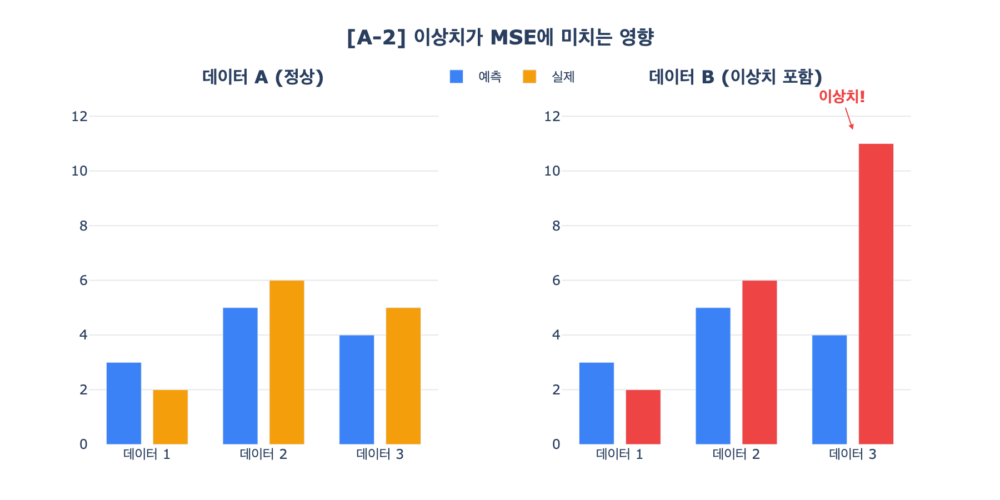
AI 모델이 기온을 예측했다. 두 데이터셋의 MSE를 비교해보세요.
데이터 A: 예측값 [3, 5, 4], 실제값 [2, 6, 5]
데이터 B: 예측값 [3, 5, 4], 실제값 [2, 6, 11]
(1) 데이터 A의 각 오차와 MSE를 구해보세요. [2점]
(2) 데이터 B의 각 오차와 MSE를 구해보세요. [1점]
(3) 데이터 B의 MSE가 A보다 훨씬 큰 이유를 "제곱"이라는 단어를 사용하여 한 문장으로 설명해주세요. [1점]
(1) 오차: [3-2, 5-6, 4-5] = [1, -1, -1]
오차²: [1, 1, 1]
MSE = (1+1+1)/3 = 3/3 = 1
(2) 오차: [3-2, 5-6, 4-11] = [1, -1, -7]
오차²: [1, 1, 49]
MSE = (1+1+49)/3 = 51/3 = 17
(3) MSE는 오차를 제곱하므로, 이상치(11)에서 발생한 큰 오차(-7)가 49로 제곱되어 전체 MSE를 크게 끌어올리기 때문이다.
- (1) 오차 계산 + MSE 정답 → 2점 / 오차만 맞고 MSE 계산 오류 → 1점
- (2) 오차 계산 + MSE 정답 → 1점
- (3) "제곱" 사용 + 이상치가 MSE를 크게 만드는 논리 → 1점
| 세트 | 데이터A 예측 | 데이터A 실제 | A의 MSE | 데이터B 실제 | B의 MSE |
|---|---|---|---|---|---|
| 기본 | [3,5,4] | [2,6,5] | 1 | [2,6,11] | 17 |
| α | [2,4,6] | [1,5,7] | 1 | [1,5,13] | 17 |
| β | [5,3,7] | [4,4,8] | 1 | [4,4,14] | 17 |
- MSE에서 오차를 왜 제곱할까요? 그냥 더하면 안 되나요?→ 양수/음수 오차가 상쇄되는 문제를 방지하기 위해 제곱한다는 설명
- 이상치가 하나 있으면 MSE가 크게 변하는 이유는?→ 제곱 때문에 큰 오차가 더 크게 증폭된다는 원리 이해
- MSE 말고 다른 손실함수를 써야 할 때는 언제일까요?→ 이상치가 많을 때 MAE 등 대안이 있다는 인식 여부
가중치 업데이트와 학습률
경사하강법은 '지금 위치에서 어느 방향으로 얼마나 움직여야 손실이 줄어들까?'를 계산하는 방법입니다. 학습률은 한 걸음의 크기를 결정합니다.
온유: "경사하강법 실습에서 학습률을 바꿔보면 어떻게 될까?"
하은: "세 가지 학습률로 가중치가 어떻게 바뀌는지 직접 계산해보자."
온유: "학습률이 너무 크면 문제가 생긴다고 했는데, 왜 그런지도 생각해봐."
경사하강법으로 가중치를 업데이트한다. 아래 세 가지 학습률에 대해 결과를 구해보세요.
기울기(gradient): -3
공식: w_new = w_old − 학습률 × 기울기
| 학습률 | w_new | |
|---|---|---|
| (1) | 0.1 | ? |
| (2) | 0.8 | ? |
| (3) | 1.5 | ? |
(4) (3)처럼 학습률이 클 때 발생할 수 있는 문제를 한 문장으로 써주세요.
| 학습률 | 계산 | w_new | |
|---|---|---|---|
| (1) | 0.1 | 5.0 − 0.1×(-3) = 5.0 + 0.3 | 5.3 |
| (2) | 0.8 | 5.0 − 0.8×(-3) = 5.0 + 2.4 | 7.4 |
| (3) | 1.5 | 5.0 − 1.5×(-3) = 5.0 + 4.5 | 9.5 |
(4) 학습률이 너무 크면 최적점을 지나쳐서(overshooting) 손실이 줄어들지 않고 발산할 수 있다.
- (1)~(3) 각 정답 1점씩 [3점]
- (4) "최적점을 지나침/발산/수렴하지 못함" 중 하나 이상 언급 → 1점
| 세트 | w | gradient | lr 0.1 | lr 0.8 | lr 1.5 |
|---|---|---|---|---|---|
| 기본 | 5.0 | -3 | 5.3 | 7.4 | 9.5 |
| α | 8.0 | -2 | 8.2 | 9.6 | 11.0 |
| β | 6.0 | 4 | 5.6 | 2.8 | 0.0 |
| γ | 10.0 | -4 | 10.4 | 13.2 | 16.0 |
- 학습률을 키우면 왜 문제가 생기나요?→ 최적점을 지나쳐서 발산할 수 있다는 overshooting 개념 이해
- 학습률이 너무 작으면 어떻게 되나요?→ 수렴이 매우 느려지고 local minimum에 빠질 수 있다는 점 언급
- 실제로 학습률은 어떻게 정하나요?→ 여러 값을 시도하거나 학습률 스케줄링 같은 방법이 있다는 인식
순전파 계산
신경망에서 입력이 층을 지나며 출력까지 전달되는 과정을 순전파(Forward Pass)라고 합니다. 각 층에서 가중합을 구하고 활성화함수를 적용합니다.
하임: "이 2층 신경망의 순전파를 해보자. 입력이 2이고, 은닉층과 출력층에 각각 가중치와 편향이 주어져 있어."
현지: "ReLU를 통과시키면서 단계별로 계산하면 되겠지?"
하임: "마지막에 ReLU가 없으면 어떻게 될지도 생각해봐."
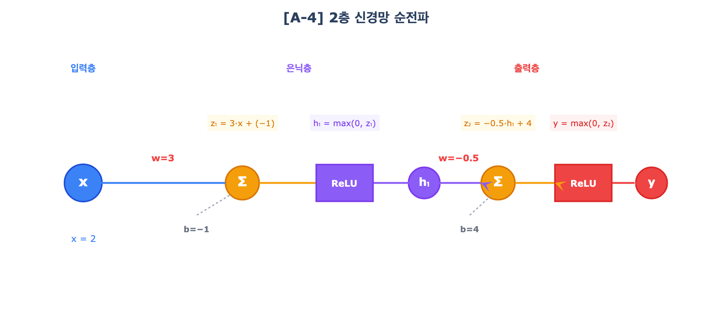
다음 2층 신경망의 순전파를 계산해보세요.
[은닉층] 가중치 w₁ = 3, 편향 b₁ = -1, 활성화: ReLU
[출력층] 가중치 w₂ = -0.5, 편향 b₂ = 4, 활성화: ReLU
(1) 은닉층의 가중합 z₁과 활성화 출력 h₁을 구하세요. (풀이과정 포함) [2점]
(2) 출력층의 가중합 z₂를 구하세요. [1점]
(3) 만약 ReLU 없이 f(z)=z라면, 이 네트워크의 입출력 관계를 x에 대한 식으로 나타내시오. [1점]
(1) z₁ = w₁×x + b₁ = 3×2 + (-1) = 5, h₁ = max(0, 5) = 5
(2) z₂ = w₂×h₁ + b₂ = (-0.5)×5 + 4 = -2.5 + 4 = 1.5
(3) z₁ = 3x − 1, z₂ = −0.5(3x−1) + 4 = −1.5x + 4.5 → 일차함수(직선)
- (1) 수식 세우기(z₁ = w₁x + b₁) → 1점 + 정답(z₁=5, h₁=5) → 1점
- (2) z₂ 정답 1.5 → 1점
- (3) 최종 식 정확 + "일차함수/직선" 언급 → 1점 / 식만 맞으면 1점
| 세트 | x | w₁ | b₁ | w₂ | b₂ | h₁ | z₂ | output | 선형식 |
|---|---|---|---|---|---|---|---|---|---|
| 기본 | 2 | 3 | -1 | -0.5 | 4 | 5 | 1.5 | 1.5 | -1.5x+4.5 |
| α | 3 | 2 | -1 | -0.5 | 6 | 5 | 3.5 | 3.5 | -x+6.5 |
| β | 1 | 4 | -2 | 0.5 | 1 | 2 | 2 | 2 | 2x |
- 순전파가 뭔지 자기 말로 설명해볼까요?→ 입력이 가중치를 거쳐 층을 따라 앞으로 전달되는 과정이라는 설명
- 활성화함수(ReLU)가 왜 필요한가요?→ 비선형성을 추가하여 복잡한 패턴을 학습할 수 있게 해준다는 점
- 층이 깊어지면 어떤 장점이 있을까요?→ 더 복잡한 특징을 추상화하여 학습할 수 있다는 이해
활성화함수 그래프 매칭
활성화함수는 신경망에 비선형성을 부여하는 핵심 장치입니다. 종류마다 그래프 모양과 특성이 다릅니다.
현지: "이 그래프들 봐. 세 개 다 모양이 다른데, 어떤 게 어떤 활성화함수인지 알겠어?"
하임: "보기가 네 개인데 그래프는 세 개야. 하나는 함정이겠지?"
현지: "각 그래프의 모양과 특징을 잘 보고 맞춰보자."
아래 세 그래프에 해당하는 활성화함수의 이름을 보기에서 골라 써주세요.
[그래프 ①] S자 곡선, 출력 범위 0~1
[그래프 ②] x<0이면 0, x≥0이면 y=x인 꺾은 직선
[그래프 ③] S자 곡선, 출력 범위 -1~1
보기: Sigmoid, ReLU, Tanh, Step
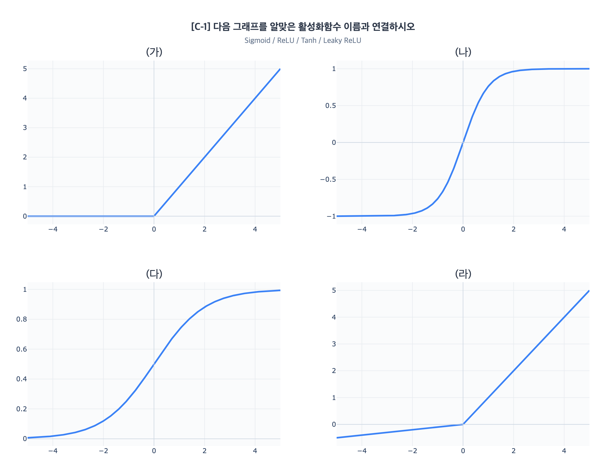
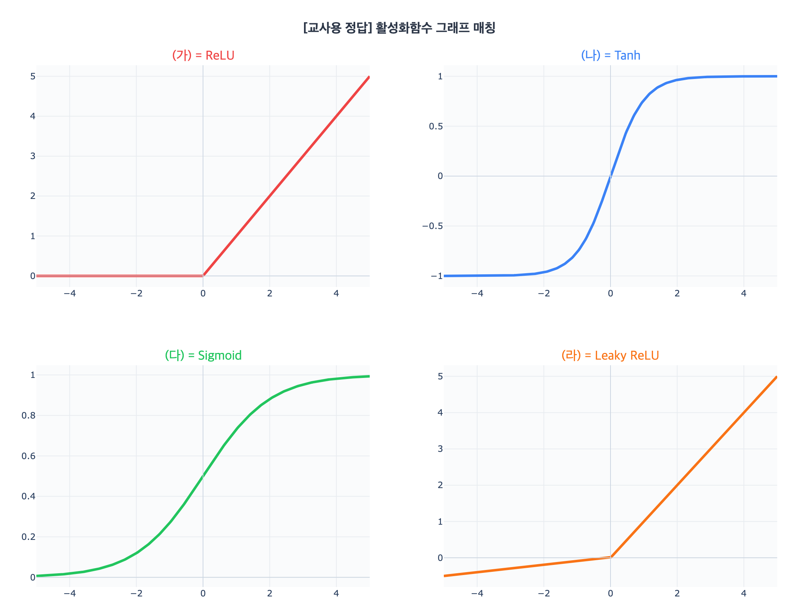
(1) Sigmoid (2) ReLU (3) Tanh
각 정답 1점씩 (총 3점)
- 이 세 그래프가 어떻게 다른지 설명해볼까요?→ 각 활성화함수의 출력 범위와 형태 차이를 말로 설명할 수 있는지
- ReLU는 왜 가장 많이 쓰이나요?→ 계산이 간단하고 기울기 소실 문제를 완화한다는 점 이해
- Sigmoid는 어떤 단점이 있나요?→ 출력이 0~1로 제한되고 기울기 소실 문제가 있다는 점
원-핫 인코딩과 벡터 연산
컴퓨터는 숫자만 이해합니다. 단어를 숫자로 바꾸는 방법 중 원-핫 인코딩은 가장 단순한 방식이고, 임베딩 벡터는 의미까지 담을 수 있는 방식입니다.
윤지: "원-핫 인코딩은 단어를 벡터로 바꾸는 거잖아. 사전이 {사과, 바나나, 포도}면 사과가 [1, 0, 0]이 되는 거지?"
은하: "그러면 바나나랑 포도는?"
윤지: "그것도 직접 해보고, 그 다음에 워드벡터 연산도 해보자!"
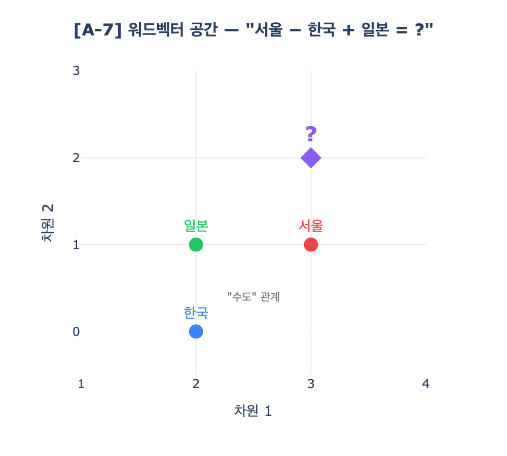
(1) 단어 사전이 {사과, 바나나, 포도}일 때, 빈칸을 채워 원-핫 인코딩을 완성해보세요. [2점]
| 단어 | 벡터 |
|---|---|
| 사과 | [1, 0, 0] |
| 바나나 | [ ?, ?, ? ] |
| 포도 | [ ?, ?, ? ] |
(2) 다음 단어 벡터가 주어졌을 때, "서울 − 한국 + 일본"을 계산해보세요. [2점]
(1) 바나나 = [0, 1, 0], 포도 = [0, 0, 1]
(2) [3, 1] − [2, 0] + [2, 1] = [3−2+2, 1−0+1] = [3, 2]
(의미: "한국의 수도가 서울이면, 일본의 수도는?" → [3, 2]는 도쿄에 해당)
- (1) 두 벡터 모두 정답 → 2점 / 하나만 → 1점
- (2) 계산 과정 + 정답 [3, 2] → 2점 / 정답만 → 1점
- 워드벡터 공간에서 가까이 있는 단어들은 어떤 특징이 있나요?→ 의미가 유사한 단어들이 가까이 위치한다는 점 이해
- 이 계산이 실제 AI에서 어떻게 활용되나요?→ 번역, 검색, 추천 등에서 의미적 유사성을 활용한다는 인식
- 벡터 차원이 2개인 건 실제와 같나요?→ 실제로는 수백 차원이지만 시각화를 위해 2차원으로 축소했다는 이해
다음 토큰 확률
AI 언어 모델은 '다음에 올 단어의 확률'을 계산하여 글을 생성합니다. 모든 후보 토큰의 확률을 합하면 반드시 1이 됩니다.
은하: "AI가 '오늘 날씨가 정말' 다음에 올 단어의 확률을 이렇게 예측했대."
윤지: "확률 합이 1이어야 한다고 했으니까, 빈칸을 채울 수 있겠네?"
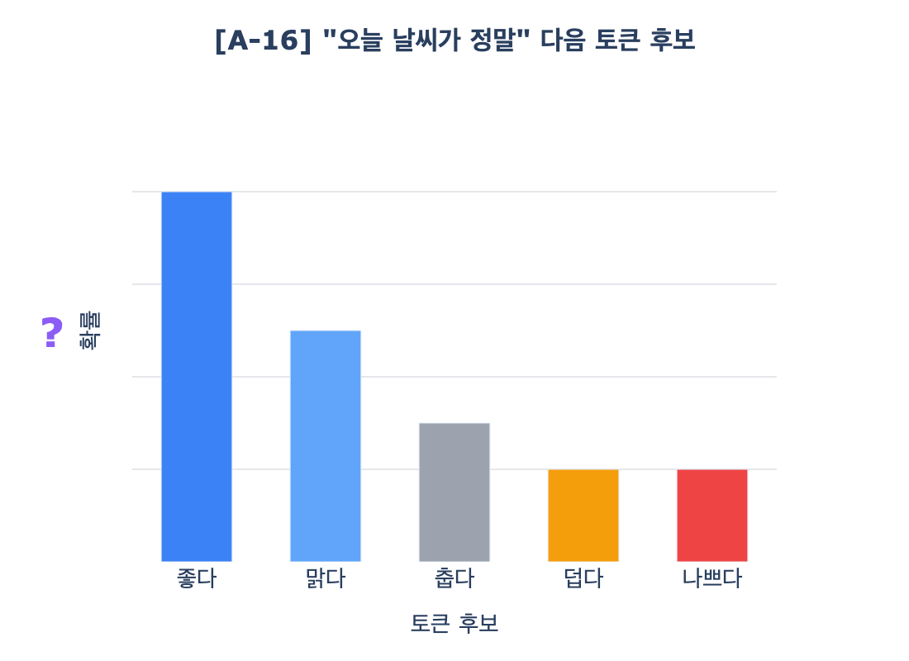
AI가 "오늘 날씨가 정말"이라는 문맥 다음에 올 토큰의 확률을 계산했다. 빈칸을 채우시오.
| 다음 토큰 후보 | 확률 |
|---|---|
| 좋다 | 0.40 |
| 맑다 | 0.25 |
| 춥다 | ( ① ) |
| 덥다 | 0.10 |
| 나쁘다 | 0.10 |
조건: 모든 토큰의 확률 합 = 1
(1) ①의 값을 구해보세요. [1점]
(2) AI가 가장 높은 확률로 선택하는 토큰은? [1점]
(1) 1 − 0.40 − 0.25 − 0.10 − 0.10 = 0.15
(2) "좋다" (확률 0.40으로 가장 높음)
각 정답 1점 (총 2점)
- "다음 토큰 예측"이 뭔지 자기 말로 설명해볼까요?→ 주어진 텍스트 다음에 올 확률이 높은 단어를 선택하는 과정이라는 이해
- 확률이 가장 높은 토큰만 항상 선택하면 어떻게 되나요?→ 반복적이고 지루한 텍스트가 생성된다는 점, Temperature와의 연결
- 이 원리가 ChatGPT 같은 대화형 AI에서 어떻게 작동하나요?→ 사용자 입력 + 이전 대화를 기반으로 다음 토큰을 반복 예측한다는 이해
어텐션 메커니즘
대형 언어 모델(LLM)은 문장 속 각 단어가 다른 단어들과 얼마나 관련 있는지를 점수로 계산하는 "어텐션(Attention)" 메커니즘을 사용한다.
서연: "문장이 길어지면 앞부분을 까먹는 문제가 있었대. 어텐션이 그걸 해결했고."
민준: "각 단어마다 '어디를 집중해서 볼지' 점수를 매기는 거래."
서연: "아래 표에서 '잤다'가 어떤 단어에 주목하는지 분석해보자."
"고양이가 매트 위에서 잠을 잤다"에서 "잤다"가 다른 단어에 부여한 어텐션 점수:
| 대상 단어 | 고양이가 | 매트 | 위에서 | 잠을 | 잤다 |
|---|---|---|---|---|---|
| 어텐션 점수 | 0.35 | 0.05 | 0.05 | 0.45 | 0.10 |
(1) "잤다"가 가장 주목하는 단어와 두 번째로 주목하는 단어를 어텐션 점수를 근거로 고르세요. [1점]
(2) 어텐션 점수 5개의 합을 구하세요. 이 합이 항상 같은 값이 되는 이유를 "확률"이라는 단어를 사용하여 설명하세요. [2점]
(1) 1순위: 잠을 (0.45), 2순위: 고양이가 (0.35)
(2) 합 = 0.35 + 0.05 + 0.05 + 0.45 + 0.10 = 1.0. 어텐션 점수는 소프트맥스(softmax)를 통해 계산된 확률 분포이므로, 모든 단어에 대한 점수의 합은 항상 1이 된다.
- (1) "잠을"과 "고양이가" 모두 정답 → 1점 / 하나만 → 0점
- (2) 합 = 1.0 정확 → 1점 + "확률 분포이므로 합이 1" 설명 → 1점
역전파 4단계 순서와 역할
역전파(Backpropagation)는 '출력의 오차를 거꾸로 추적하여 각 가중치의 책임을 계산하는' 알고리즘입니다. 신경망이 스스로 학습할 수 있게 된 핵심 발견입니다.
현지: "이 4장 카드를 순서대로 놓아봐. 신경망 학습의 4단계야."
하임: "순전파가 먼저인 건 알겠는데, 그 다음이 뭐지? 오차 계산? 역전파?"
현지: "순서를 맞추고, 각 단계가 뭘 하는지도 한 줄로 써봐."
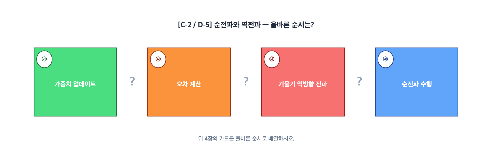
다음은 신경망 학습의 4단계를 무작위로 나열한 것이다.
(1) 올바른 순서로 배열해보세요. [2점]
(2) 각 단계의 핵심 역할을 한 줄로 써주세요. [2점]
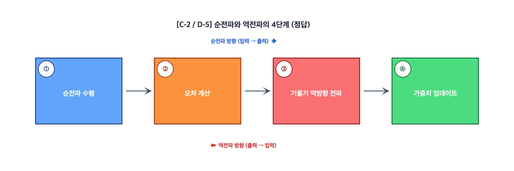
(1) ㄷ → ㄴ → ㄹ → ㄱ
(2)
| 순서 | 단계 | 핵심 역할 |
|---|---|---|
| 1 | ㄷ 순전파 | 입력에서 출력까지 예측값을 계산한다 |
| 2 | ㄴ 오차 계산 | 예측값과 실제값의 차이를 손실함수로 측정한다 |
| 3 | ㄹ 역전파 | 오차에 대한 각 가중치의 기울기(책임)를 거꾸로 계산한다 |
| 4 | ㄱ 가중치 업데이트 | 기울기 반대 방향으로 가중치를 수정한다 |
- (1) 완전 정답 → 2점 / 1개 오류 → 1점 / 2개 이상 오류 → 0점
- (2) 핵심 동사(굵은 부분) 포함 시 각 0.5점 (총 2점)
- 학습 5단계에서 가장 중요한 단계가 뭐라고 생각하나요?→ 자신의 의견을 논리적으로 설명할 수 있는지 확인
- 손실함수, 경사하강법, 역전파의 관계를 한 문장으로 말해볼까요?→ 손실을 측정하고, 줄이는 방향을 찾고, 그 정보를 전달하는 세 단계 연결
- 이 5단계가 반복되면 AI가 어떻게 되나요?→ 점점 정확해진다/손실이 줄어든다는 학습의 본질 이해
학습률 그래프 해석
학습률은 경사하강법에서 '한 걸음의 크기'를 결정합니다. 너무 작으면 영원히 도착하지 못하고, 너무 크면 목적지를 지나쳐 버립니다.
온유: "이 세 그래프를 보자. 같은 문제인데 학습률만 달라."
하은: "하나는 느리게 줄어들고, 하나는 잘 수렴하고, 하나는 미친 듯이 진동하네."
온유: "어떤 그래프가 어떤 학습률인지 맞춰보고, 진동하는 건 왜 그런지도 설명해봐."
아래 세 그래프는 같은 문제에 서로 다른 학습률을 적용한 손실(Loss) 변화이다.
[그래프 A] 매우 느리게 감소. 100 epoch 후에도 아직 수렴 안 됨.
[그래프 B] 빠르게 감소하여 안정적으로 수렴.
[그래프 C] 위아래로 크게 진동. 수렴하지 못함.
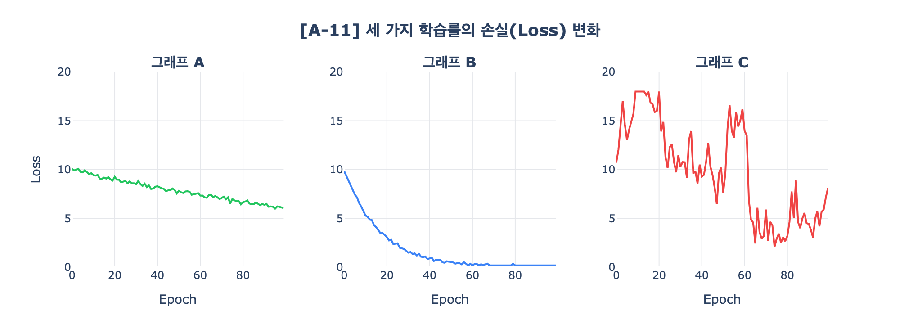
보기 학습률: 0.001, 0.1, 2.0
(1) 각 그래프에 해당하는 학습률을 연결해보세요. [2점]
(2) 그래프 C에서 손실이 줄어들지 않는 이유를 "학습률"이라는 단어를 사용하여 설명하세요. [2점]
(1) A → 0.001, B → 0.1, C → 2.0
(2) 학습률이 너무 커서 최적점을 지나치고 반대편으로 넘어가는 것을 반복하기 때문에, 손실이 줄어들지 않고 진동(발산)한다.
- (1) 3개 모두 정답 → 2점 / 2개 정답 → 1점
- (2) "학습률" 사용 + "최적점을 지나침/진동/수렴 못함" 설명 → 2점 / "학습률" 사용 + 설명 불충분 → 1점
※ 보너스 용어: "발산", "진동", "오버슈팅(overshooting)" 등을 추가 사용하면 서술의 정확성으로 인정
- 그래프 A, B, C의 차이를 자기 말로 설명해볼까요?→ A는 느린 수렴, B는 적절한 수렴, C는 진동/발산이라는 패턴 인식
- 실제로 학습률을 정할 때 어떤 그래프가 이상적인가요?→ B처럼 빠르게 수렴하면서 안정적인 패턴이 이상적이라는 판단
- 학습률 외에 학습 속도에 영향을 미치는 요소가 있을까요?→ 배치 크기, 옵티마이저 등 다른 하이퍼파라미터에 대한 인식
XOR 좌표 분류 판단
1969년 민스키는 퍼셉트론의 한계에 대해 중요한 문제를 제기했습니다. 이것이 AI 역사의 전환점이 되었습니다. 직접 좌표를 보고 판단해봅시다.
현지: "이 좌표평면을 봐. 4개의 점이 있는데, ○이랑 ●가 대각선으로 배치돼 있어."
하임: "직선 하나로 ○과 ●를 나눌 수 있을까?"
현지: "될까, 안 될까? 이유도 같이 설명해봐."
좌표 평면에 4개의 점이 있다.
● (0,1) ○ (1,1)
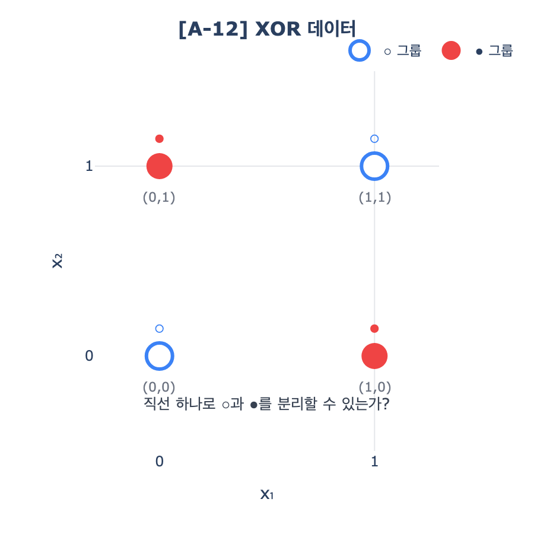
○과 ●는 서로 다른 그룹이다.
(1) 이 4개의 점을 ○과 ●로 나누는 직선 1개를 그을 수 있는가? [1점]
(2) 그 이유를 설명해주세요. [2점]
(1) 그을 수 없다.
(2) ○은 (0,0)과 (1,1)로 대각선 방향에, ●은 (0,1)과 (1,0)으로 반대 대각선에 있다. 어떤 직선을 그어도 ○ 사이에 ●가 끼어 있어서 한 번에 분리할 수 없다. 이것이 퍼셉트론이 해결할 수 없는 XOR 문제이다.
- (1) "불가능" → 1점
- (2) 대각선 배치 등 기하학적 설명 → 1점 + "XOR" 또는 "직선의 한계" 언급 → 1점
- 직선 하나로 분리가 안 되는 걸 어떻게 확인했나요?→ 대각선 배치 때문에 어떤 직선을 그어도 두 그룹이 섞인다는 시각적/논리적 설명
- 이 문제를 해결하려면 어떻게 해야 할까요?→ 은닉층을 추가하거나 비선형 활성화함수를 사용해야 한다는 점
- XOR 문제가 AI 역사에서 왜 중요한가요?→ 퍼셉트론의 한계를 보여주어 AI 겨울의 원인이 되었다는 역사적 맥락
활성화함수 없는 깊은 신경망
'층을 많이 쌓으면 더 똑똑해지지 않을까?' 이 질문에 답하려면 활성화함수가 왜 필수인지 이해해야 합니다.
하은: "영수가 '활성화함수 없어도 은닉층을 100개 쌓으면 XOR이 풀린다'고 주장하는데, 맞는 말이야?"
온유: "음... 활성화함수가 없으면 각 층에서 하는 계산이 뭔지 생각해봐."
하은: "곱하기랑 더하기... 그러면 층을 아무리 쌓아도 결국 어떤 함수가 될까?"
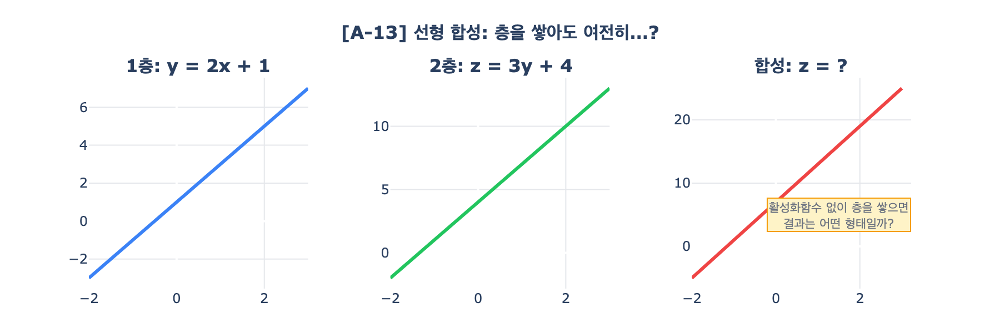
영수는 이렇게 주장한다:
"활성화함수가 없어도, 은닉층을 100개 쌓으면 XOR 문제를 해결할 수 있다."
(1) 이 주장은 맞는가, 틀린가? [1점]
(2) 활성화함수 없이 층을 쌓으면 최종 출력이 어떤 형태의 함수가 되는지 밝히고, 이를 근거로 영수의 주장이 왜 틀린지 설명해주세요. [2점]
(1) 틀리다.
(2) 활성화함수 없이는 각 층이 선형함수(곱하기+더하기)이므로, 아무리 합성해도 결국 하나의 일차함수(y = ax + b)가 된다. 직선 하나로는 XOR처럼 대각선 배치된 데이터를 나눌 수 없으므로, 100개를 쌓아도 해결 불가능하다.
- (1) "틀리다" → 1점
- (2) "선형의 합성은 선형" → 1점 + "직선으로 XOR 불가" → 1점
- 활성화함수 없이 층을 쌓으면 왜 여전히 직선인가요?→ 선형함수의 합성은 여전히 선형이라는 수학적 원리 이해
- 이게 XOR 문제와 어떻게 연결되나요?→ 선형으로는 XOR 분리가 불가능하므로 활성화함수가 필수라는 논리
- 활성화함수가 추가되면 구체적으로 뭐가 달라지나요?→ 비선형 경계를 만들 수 있어 복잡한 패턴 분류가 가능해진다는 점
Temperature와 AI 출력
Temperature는 AI가 다음 토큰을 선택할 때 '얼마나 모험적으로 고를지'를 조절하는 파라미터입니다.
은하: "같은 질문인데 AI가 두 번 다르게 대답했어. Temperature 설정이 달라서래."
윤지: "출력 A는 평범한데, 출력 B는 완전 엉뚱하잖아. Temperature가 뭐길래 이렇게 다른 거야?"
은하: "확률 분포가 어떻게 변하는지 설명해봐."
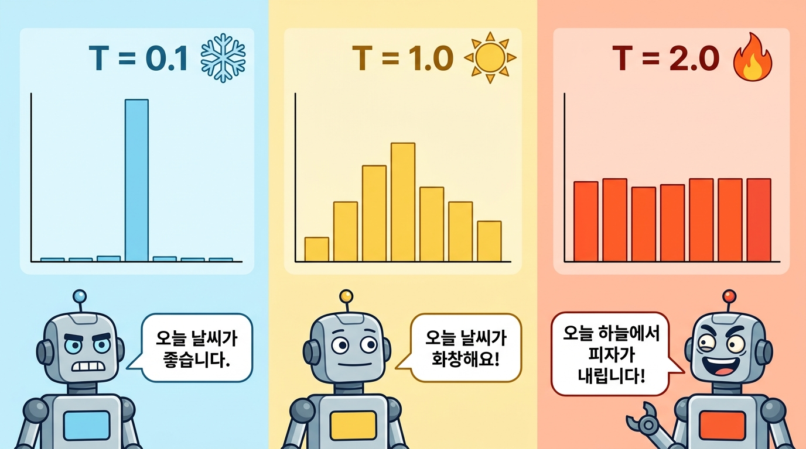
같은 질문 "봄이 오면"에 대해, AI가 서로 다른 Temperature로 답했다.
출력 A: "봄이 오면 꽃이 피고 날씨가 따뜻해집니다."
출력 B: "봄이 오면 고양이가 우주를 여행하며 별자리를 수집합니다."
(1) Temperature가 높은 출력은 A, B 중 어느 것인가? [1점]
(2) Temperature가 높으면 확률 분포가 어떻게 변하는지 설명해주세요. [2점]
(1) B
(2) Temperature가 높으면 확률 분포가 평평해져서(균등해져서), 원래 확률이 낮았던 토큰도 선택될 가능성이 높아진다. 따라서 예상치 못한 단어 조합이 나타나 창의적이지만 엉뚱한 출력이 생긴다.
- (1) B → 1점
- (2) "확률 분포 평평/균등" → 1점 + "낮은 확률 토큰도 선택" → 1점
- Temperature가 높으면 AI 답변이 어떻게 달라지나요?→ 확률 분포가 균등해져서 다양하고 창의적이지만 예측 불가능한 답변이 나온다
- Temperature 0에 가까우면 항상 좋은 건가요?→ 안정적이지만 다양성이 없고 반복적인 답변이 나올 수 있다는 트레이드오프 이해
- 어떤 상황에서 Temperature를 높이거나 낮추면 좋을까요?→ 창작→높게, 사실 정보→낮게 등 용도별 적절한 설정에 대한 이해
2. Track B: 키워드 서술형 (25점, 5문항)
공통 규칙: 제시된 필수 키워드를 모두 사용하여 서술. 키워드는 밑줄을 그어 채점자가 확인 가능.
XOR 한계와 AI 겨울
AI 역사에는 희망과 좌절이 반복됩니다. 1958년 퍼셉트론의 탄생은 큰 기대를 불러일으켰지만, 1969년의 한 권의 책이 그 기대를 무너뜨렸습니다.
온유: "로젠블랫이 만든 퍼셉트론이 대단한 발명이었는데, 왜 AI 겨울이 온 거야?"
하은: "누군가가 퍼셉트론의 한계를 수학적으로 증명해서 모든 기대가 무너진 거래."
온유: "그 과정을 자세히 써보자."

다음 키워드를 모두 사용하여, "퍼셉트론의 한계가 AI 겨울을 초래한 과정"을 4문장 이내로 설명해주세요.
1958년 로젠블랫이 만든 퍼셉트론은 직선 하나로 데이터를 분류하는 기계였다. 그러나 1969년 민스키와 파퍼트는 퍼셉트론이 XOR 문제처럼 직선으로 나눌 수 없는 패턴을 절대 학습할 수 없음을 수학적으로 증명했다. 이 증명으로 퍼셉트론에 대한 기대가 무너졌고, AI 연구에 대한 투자와 관심이 급격히 줄어드는 AI 겨울이 시작되었다.
배점 구조: 키워드 사용 3점 + 논리적 흐름 2점
| 점수 | 기준 |
|---|---|
| 5점 | 키워드 3개 모두 정확히 사용(3점) + "한계 → 증명 → AI 겨울"의 인과관계 명확 + 역사적 맥락까지 서술(2점) |
| 4점 | 키워드 3개 모두 사용(3점) + 인과관계 명확(1점) |
| 3점 | 키워드 2개 이상 사용(2점) + 인과관계 대체로 정확(1점) |
| 2점 | 키워드 1개 사용(1점) + 인과관계가 부분적(1점) |
| 1점 | 키워드 미사용이나 관련 내용을 서술(1점) |
| 0점 | 무응답 또는 완전히 무관한 내용 |
☐ XOR: XOR 문제의 특성(대각선 배치 등) 설명에 사용
☐ 직선/선형: 퍼셉트론의 한계와 연결
☐ 민스키: 한계 증명의 주체로 언급
- 퍼셉트론의 가장 큰 한계가 뭐였나요?→ XOR 같은 비선형 문제를 풀 수 없다는 점을 자기 말로 설명
- 민스키의 증명이 왜 그렇게 큰 영향을 미쳤나요?→ 수학적으로 불가능을 증명하여 연구 투자가 중단되었다는 맥락 이해
- AI 겨울에서 어떻게 빠져나왔나요?→ 다층 퍼셉트론+역전파 알고리즘의 발견, 그리고 이후 ReLU/GPU 발전
딥러닝 부활의 세 가지 열쇠
약 20년간의 AI 겨울 이후, 세 가지 돌파구가 딥러닝을 부활시켰습니다. 활성화함수의 혁신, 컴퓨팅 파워의 도약, 그리고 ImageNet으로 대표되는 대규모 데이터의 등장이었습니다.
현지: "AI 겨울이 끝나고 딥러닝이 부활한 게 2012년이라고 했잖아."
하임: "그때 세 가지가 핵심이었대. 활성화함수를 바꾼 것, 컴퓨팅 파워가 달라진 것, 그리고 대규모 데이터가 준비된 것."
현지: "왜 그 세 가지가 중요했는지 정리해보자."
다음 키워드를 모두 사용하여, "딥러닝 부활의 세 가지 열쇠"를 설명해주세요.
기존 Sigmoid 활성화함수는 값이 크거나 작을 때 기울기가 0에 가까워져 깊은 신경망에서 기울기 소실 문제를 일으켰다. ReLU는 양수 구간에서 기울기가 항상 1이어서 이 문제를 크게 완화했다. GPU의 병렬 연산 능력으로 수천만 개의 파라미터를 동시에 계산할 수 있게 되었다. 또한 ImageNet이라는 1,400만 장 규모의 대규모 이미지 데이터셋이 구축되어, 깊은 신경망을 충분히 훈련시킬 수 있는 데이터 기반이 마련되었다. 2012년 AlexNet이 ReLU, GPU, ImageNet 데이터를 결합하여 이미지 인식 대회에서 압도적으로 우승하며 딥러닝 시대가 열렸다.
| 점수 | 기준 |
|---|---|
| 5점 | 키워드 4개 모두 사용 + ReLU(기울기 소실 해결) + GPU(병렬 연산) + ImageNet(대규모 데이터) + AlexNet(전환점)을 정확히 연결 |
| 4점 | 키워드 3개 이상 사용 + 핵심 논리 대체로 정확 |
| 3점 | 키워드 2개 이상 사용 + 인과관계 대체로 정확 |
| 2점 | 키워드 1개 사용 또는 논리가 부분적 |
| 1점 | 키워드 미사용이나 관련 내용 서술 |
| 0점 | 무응답 또는 완전히 무관 |
☐ 기울기 소실: Sigmoid의 한계와 ReLU의 해결책으로 연결
☐ AlexNet: 딥러닝 부활의 전환점으로 언급
☐ 병렬 연산: GPU의 핵심 강점으로 사용
☐ ImageNet: 대규모 데이터의 역할로 사용
- ReLU가 Sigmoid보다 나은 이유를 설명해볼까요?→ 기울기 소실 문제를 해결하고 계산이 간단하다는 두 가지 장점
- GPU가 딥러닝에 특히 유용한 이유는?→ 행렬 연산을 병렬로 빠르게 처리할 수 있기 때문이라는 이해
- 대규모 데이터(ImageNet)가 왜 중요했나요?→ 깊은 신경망을 충분히 훈련시키려면 방대한 학습 데이터가 필요하다는 이해
- AlexNet이 왜 역사적으로 중요한가요?→ 2012년 ImageNet에서 딥러닝의 우수성을 입증한 사건이라는 맥락
AI 환각은 왜 발생하는가
AI가 '그럴듯하지만 사실이 아닌 정보'를 만들어내는 현상을 환각(Hallucination)이라고 합니다. 이것은 AI의 버그가 아니라, 작동 방식의 구조적 한계입니다. ChatGPT에게 '독도의 역사를 알려줘'라고 물었더니, 실제로 존재하지 않는 조약 이름을 자신 있게 답했습니다.
윤지: "ChatGPT한테 독도의 역사를 물어봤더니 없는 조약 이름을 자신 있게 말했어!"
은하: "그게 환각 현상이잖아. 근데 AI가 일부러 거짓말하는 건 아니래."
윤지: "그러면 왜 이런 일이 생기는 거야? AI 작동 원리로 설명해봐."
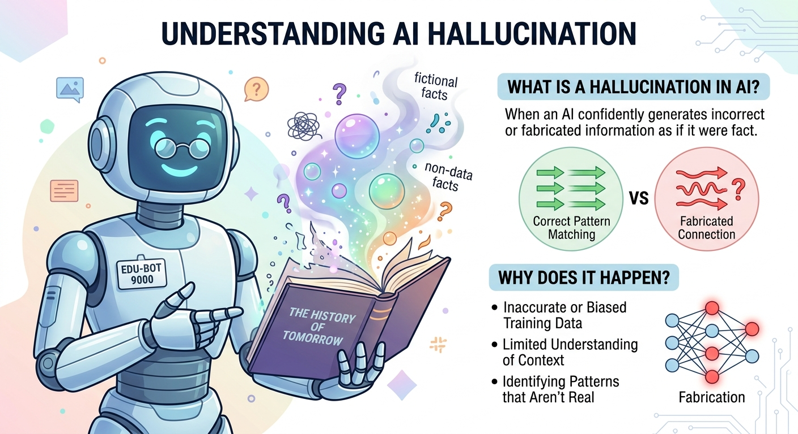
위 상황에서 AI가 틀린 답을 자신 있게 말한 이유를 다음 키워드를 모두 사용하여 설명해주세요.
AI 언어 모델은 다음 토큰의 확률을 계산하여 글을 생성한다. 이 확률은 학습 데이터의 패턴에서 나온 것이므로, 학습 데이터에 없거나 부정확한 정보에 대해서는 올바른 확률을 계산할 수 없다. 그럼에도 모델은 항상 가장 그럴듯한 다음 토큰을 선택하기 때문에, 사실이 아닌 내용도 자연스러운 문장으로 생성하게 된다.
| 점수 | 기준 |
|---|---|
| 5점 | 키워드 3개 모두 사용 + "학습 데이터의 한계 → 확률 오류 → 그럴듯한 허위 토큰 생성"의 구조적 필연성 설명 + 구체적 사례 연결 |
| 4점 | 키워드 3개 모두 사용 + 구조적 원인 명확히 설명 |
| 3점 | 키워드 2개 이상 사용 + 구조적 원인 대체로 설명 |
| 2점 | 키워드 1개 사용 또는 원인 설명이 부분적 |
| 1점 | "AI가 거짓말한다" 수준의 피상적 답변 |
| 0점 | 무응답 또는 완전히 무관 |
☐ 학습 데이터: 환각의 근본 원인(한계/부정확)으로 연결
☐ 확률: 토큰 선택 메커니즘으로 사용
☐ 다음 토큰: AI의 생성 방식으로 언급
- AI가 일부러 거짓말하는 건가요?→ 아니다, 확률적으로 다음 토큰을 예측하는 구조적 한계라는 이해
- 환각을 줄이려면 어떤 방법이 있을까요?→ RAG, 사실확인 등 외부 지식 연결 방법에 대한 인식
- 학습 데이터의 질이 왜 중요한가요?→ 잘못된 데이터로 학습하면 잘못된 확률 분포가 형성된다는 이해
손실 → 경사하강 → 역전파
4~6차시에 걸쳐 배운 세 가지 핵심 개념은 각각 다른 역할을 하지만, 함께 작동하여 신경망이 스스로 학습할 수 있게 만듭니다.
현공: "4차시, 5차시, 6차시에서 배운 세 가지가 결국 하나로 이어진다고 했잖아."
하임: "맞아. 손실함수로 재고, 경사하강법으로 줄이고, 역전파로 전달하는 거지?"
현공: "각각의 역할을 키워드로 정리해서 써보자."
다음 키워드를 모두 사용하여, "신경망이 스스로 학습하는 과정에서 손실함수, 경사하강법, 역전파가 각각 어떤 역할을 하는지"를 설명해주세요.
신경망 학습에서 손실함수는 모델이 얼마나 틀렸는지를 측정하는 도구이다. 경사하강법은 손실을 줄이기 위해 가중치를 어느 방향으로 얼마나 수정할지를 결정한다. 역전파는 수많은 가중치 각각의 기울기를 연쇄법칙으로 효율적으로 계산하여 이 과정을 자동화한다. 세 요소가 결합되어 신경망은 사람의 개입 없이 최적의 가중치를 찾아간다.
| 점수 | 기준 |
|---|---|
| 5점 | 키워드 3개 모두 사용 + 세 개념의 역할을 각각 정확히 기술하고 연결 관계 설명 + 전체 학습 사이클의 필연성 논증 |
| 4점 | 키워드 3개 모두 사용 + 세 개념의 역할과 연결 관계 설명 |
| 3점 | 키워드 2개 이상 사용 + 역할 구분 대체로 정확 |
| 2점 | 키워드 1개 사용 또는 역할 구분 불명확 |
| 1점 | 키워드 미사용이나 관련 내용 서술 |
| 0점 | 무응답 또는 완전히 무관 |
☐ 측정: 손실함수의 역할로 연결
☐ 방향: 경사하강법의 역할로 연결
☐ 자동화: 역전파의 역할로 연결
- 손실함수, 경사하강법, 역전파 세 가지의 관계를 비유로 설명해볼까요?→ 시험성적(손실)→공부방향(경사하강)→과목별피드백(역전파) 같은 비유 가능
- 이 세 가지 중 하나라도 없으면 어떻게 되나요?→ 각각의 역할이 필수적이라는 것을 구체적으로 설명할 수 있는지
- "자동"으로 학습한다는 게 정확히 무슨 뜻인가요?→ 사람이 규칙을 정하는 게 아니라 데이터에서 패턴을 스스로 찾는다는 이해
"기계가 생각할 수 있는가?" — 최종 성찰
1차시에서 던진 질문으로 돌아갑니다. 8차시까지 배운 AI의 작동 원리를 근거로, 이제 자신만의 답을 내릴 때입니다.
하은: "1차시 첫 수업에서 선생님이 물었잖아. '기계가 생각할 수 있는가?'"
온유: "그때는 막연하게 답했는데, 이제 8차시까지 배우고 나니까 근거를 들어서 말할 수 있을 것 같아."
하은: "배운 개념들을 최대한 활용해서 너의 최종 답변을 써봐."
1차시에서 던진 질문 "기계가 생각할 수 있는가?"에 대해, 8차시까지 배운 내용을 바탕으로 자신의 최종 답변을 설명해주세요.
튜링 테스트, 중국어 방, 퍼셉트론, 활성화함수, 손실함수, 경사하강법, 역전파, 임베딩, 다음 토큰 예측, 환각
기계가 "생각"하는 것처럼 보이는 것은 사실이다. 퍼셉트론에서 시작된 신경망은 활성화함수로 비선형성을 확보하고, 역전파로 스스로 학습하며, 임베딩으로 단어의 의미까지 수치화한다. 그러나 환각 현상에서 보듯 AI는 확률적 패턴 매칭일 뿐 진정한 이해는 아닐 수 있다. 나는 현재 AI가 튜링 테스트는 통과할 수 있지만, 중국어 방이 지적하듯 "이해"와 "모방"의 경계에 있다고 생각한다.
| 점수 | 기준 |
|---|---|
| 5점 | 키워드 4개 이상 사용 + 자신의 입장 명확 + AI 작동 원리를 근거로 논증 + 한계/가능성 균형 있는 시각 |
| 4점 | 키워드 3개 사용 + 입장 명확 + 원리 기반 근거 제시 |
| 3점 | 키워드 2개 사용 + 입장은 있으나 근거 부족 |
| 2점 | 키워드 1개 사용 + 감상 수준의 서술 |
| 1점 | 키워드 없이 단순 감상 ("잘 모르겠다" 등) |
| 0점 | 무응답 |
☐ 튜링 테스트 ☐ 중국어 방 ☐ 퍼셉트론 ☐ 활성화함수 ☐ 손실함수
☐ 경사하강법 ☐ 역전파 ☐ 임베딩 ☐ 다음 토큰 예측 ☐ 환각
(3개 이상 사용 필요)
- 8차시를 배우기 전과 후에 생각이 어떻게 달라졌나요?→ 학습을 통한 사고의 변화와 성장을 확인
- AI가 "생각한다"는 것과 "처리한다"는 것의 차이는?→ 자신만의 관점으로 이 구분을 설명할 수 있는지
- 이 수업에서 가장 인상 깊었던 개념은 무엇인가요?→ 개인적 학습 경험과 핵심 개념의 연결 확인
3. Track C: 과정 관찰 평가 (30점)
수업 중 관찰로 누적 평가. 1~8차시 동안 체크리스트를 기반으로 기록. 시험 전에 학생에게 체크리스트를 사전 공개한다.
실습 참여
| 점수 | 기준 |
|---|---|
| 9~10점 | 모든 실습을 주도적으로 수행 + 추가 조건으로 자발적 실험 |
| 7~8점 | 모든 실습을 성실히 수행하고 결과를 기록 |
| 5~6점 | 대부분의 실습 수행, 일부 미완성 |
| 3~4점 | 실습에 참여하나 수동적 (시키는 것만 함) |
| 1~2점 | 실습 참여 최소한 |
• 코드/시뮬레이션을 직접 실행하는가?
• 결과를 활동지에 기록하는가?
• 오류 발생 시 스스로 해결을 시도하는가?
탐구 태도
| 점수 | 기준 |
|---|---|
| 9~10점 | "왜?"라는 질문을 스스로 제기 + 다른 조건으로 실험 + 결과를 논리적으로 해석 |
| 7~8점 | 질문하고 다른 조건 변경을 시도 |
| 5~6점 | 결과를 나름대로 해석하려 노력 |
| 3~4점 | 지시된 실습만 수행 (탐구 시도 없음) |
| 1~2점 | 결과에 관심 없이 형식적 참여 |
• "학습률을 더 크게 하면 어떻게 될까?" 같은 질문을 하는가?
• 파라미터를 바꿔가며 실험하는가?
• 실험 결과에 대해 "왜 이런 결과가 나왔을까?"를 고민하는가?
협력과 공유
| 점수 | 기준 |
|---|---|
| 9~10점 | 자신의 발견을 모둠원에게 설명 + 다른 학생의 질문에 적극 답변 + 학습 내용을 자기 언어로 정리 |
| 7~8점 | 모둠 활동에 적극 참여하고 아이디어를 공유 |
| 5~6점 | 모둠 활동에 참여 |
| 3~4점 | 소극적 참여 (물어보면 답하는 정도) |
| 1~2점 | 개별 활동만 수행 |
• 모둠 토론에서 자기 의견을 말하는가?
• 다른 학생이 어려워할 때 도움을 주는가?
• 배운 내용을 자기 언어로 재표현하는가?
📋 관찰 기록 도구
관찰 기록 약어 코드
수업 중 빠르게 기록할 수 있는 약어입니다. 구글 시트에 이 코드를 입력하세요.
| 코드 | 의미 | 점수 환산 |
|---|---|---|
| ++ | 탁월 — 주도적 수행 + 자발적 확장 | 9~10점 |
| + | 우수 — 성실 수행 + 결과 기록 | 7~8점 |
| = | 보통 — 기본 참여, 일부 미완성 | 5~6점 |
| - | 미흡 — 수동적 참여 | 3~4점 |
| -- | 부족 — 참여 최소 | 1~2점 |
구글 시트 관찰 기록표 템플릿
아래 구조로 구글 시트를 만들어 수업 중 기록하세요. 한 학생당 한 행, 차시마다 C-1/C-2/C-3 약어를 입력합니다.
| 번호 | 이름 | 2차시 | 3차시 | 4차시 | 5차시 | 6차시 | 7차시 | 8차시 | C-1 | C-2 | C-3 | 합계 | ||||||||||||||
|---|---|---|---|---|---|---|---|---|---|---|---|---|---|---|---|---|---|---|---|---|---|---|---|---|---|---|
| 참 | 탐 | 협 | 참 | 탐 | 협 | 참 | 탐 | 협 | 참 | 탐 | 협 | 참 | 탐 | 협 | 참 | 탐 | 협 | 참 | 탐 | 협 | ||||||
| 1 | 김○○ | + | = | + | + | + | + | = | + | = | ++ | + | + | + | ++ | + | + | + | = | ++ | ++ | + | 8 | 8 | 7 | 23 |
| 2 | 이○○ | = | = | - | = | = | = | = | - | = | = | = | = | = | = | = | + | = | = | = | = | = | 5 | 5 | 5 | 15 |
| 3 | … | |||||||||||||||||||||||||
환산법: 7차시 동안의 코드 빈도를 보고 C-1/C-2/C-3 각 10점 만점으로 환산합니다.
예: ++ 2회, + 4회, = 1회 → 대체로 "우수" → 8점
차시별 관찰 포인트
각 차시에서 어떤 행동을 관찰해야 하는지 빠르게 참고하세요.
| 차시 | C-1 실습 참여 | C-2 탐구 태도 | C-3 협력과 공유 |
|---|---|---|---|
| 2차시 | XOR 시뮬레이터 직접 조작 | "왜 직선으로 안 되지?" 질문 | 발견한 패턴을 모둠에서 공유 |
| 3차시 | 활성화함수 4종 비교 실습 | 함수를 바꿔가며 차이 관찰 | 비교 결과를 다른 학생에게 설명 |
| 4차시 | MSE 손계산 워크시트 완수 | "이상치가 왜 영향이 클까?" 고민 | 계산 과정을 옆 친구에게 알려줌 |
| 5차시 | 레이싱 시뮬레이터 전략 실행 | 학습률을 변경하며 실험 | 1차 vs 2차 전략 차이 공유 |
| 6차시 | 순전파 계산 워크시트 완수 | "역전파는 왜 역방향이지?" | 계산 결과 검증을 서로 도움 |
| 7차시 | 토큰화 실험 + 임베딩 탐색 | "왕-남자+여자 = ?" 직접 시도 | 재미있는 벡터 연산 결과 공유 |
| 8차시 | Temperature 실험 수행 | "왜 환각이 생길까?" 고민 | 환각 사례를 모둠에서 분석 |
4. 구술평가 운영 가이드 교사 전용
이 평가는 "손으로 쓰고 → 말로 설명하는" 구술평가입니다.
완벽한 답을 쓰지 못했더라도 부분적으로 이해하고 설명할 수 있으면 부분 점수를 줍니다.
정답을 외워서 썼더라도 질문에 설명하지 못하면 점수를 깎습니다.
판단 기준: "외웠느냐"가 아니라 "이해했느냐"
평가 진행 흐름
| 단계 | 시간 | 내용 |
|---|---|---|
| 1단계 필기 | 약 45분 | Track A(30분) + Track B(15분) 손글씨 작성 |
| 2단계 구술 | 1인당 2~3분 | 교사가 1~2문항 골라 "이거 설명해봐" 질문 |
| 3단계 채점 | 1인당 5~8분 | 필기 답안 + 구술 응답을 종합 채점 |
구술 확인 질문 뱅크
학생이 쓴 답 중 1~2문항을 골라 아래 질문으로 이해도를 확인합니다. 정답을 외운 학생과 이해한 학생을 구별하는 핵심 도구입니다.
| 문항 | 확인 질문 (택 1~2) | 이해한 학생 반응 |
|---|---|---|
| A-1 | "편향(b)을 빼면 어떻게 달라져?" / "z가 음수이면 출력은 왜 0이야?" | 계단함수 기준, 임계값 개념 설명 |
| A-2 | "제곱을 하는 이유가 뭐야?" / "이상치 하나가 MSE를 왜 이렇게 키워?" | 부호 상쇄 방지, 제곱 효과 설명 |
| A-3 | "학습률이 너무 크면 왜 위험해?" / "기울기가 음수이면 가중치는 어디로 가?" | 발산/진동 위험, 최솟값 방향 설명 |
| A-4 | "은닉층이 하는 역할이 뭐야?" / "여기서 ReLU를 빼면?" | 비선형 변환, 선형 축소 문제 언급 |
| A-5 | "Sigmoid랑 ReLU 중 요즘 더 많이 쓰는 건? 왜?" | 기울기 소실 문제 언급 |
| A-6 | "원-핫 인코딩의 단점이 뭐야?" / "벡터 연산으로 의미를 계산한다는 게 무슨 뜻?" | 희소성, 의미 관계 반영 불가 설명 |
| A-7 | "확률이 가장 높은 토큰을 항상 선택해?" | Temperature/무작위성 언급 |
| A-8 | "어텐션 점수가 높다는 게 무슨 의미야?" / "합이 1인 이유?" | 관련성 가중치, 확률 분포 설명 |
| A-9 | "왜 역방향으로 가야 해? 순방향은 안 돼?" / "순서 바꾸면?" | 연쇄 법칙, 출력→입력 방향 설명 |
| A-10 | "이 그래프에서 가장 좋은 학습률은 어떤 거야? 왜?" | 수렴 속도 vs 안정성 트레이드오프 |
| A-11 | "직선 하나로 왜 분류가 안 돼?" / "은닉층을 추가하면?" | XOR 패턴, 비선형 경계 필요성 |
| A-12 | "선형함수를 아무리 합성해도 왜 직선이야?" | 선형 합성의 수학적 원리 설명 |
| A-13 | "Temperature를 0에 가깝게 하면?" / "1보다 크게 하면?" | 결정적/무작위적 출력 차이 설명 |
| B-1~5 | "여기 쓴 키워드 중 ○○가 무슨 뜻인지 설명해봐" / "왜 이 순서로 연결된다고 생각해?" | 키워드의 의미와 인과관계를 자기 말로 설명 |
"외운 답" vs "이해한 답" 구분법
| 외운 학생 | 이해한 학생 | |
|---|---|---|
| 질문 반응 | 당황하거나 "그냥 그렇게 배웠어요" | 자기 말로 바꿔서 설명 시도 |
| 변형 질문 | "그건 안 배웠어요" (경직) | "음… 이렇게 되지 않을까?" (유연) |
| 오류 지적 시 | 고집하거나 전체를 포기 | 부분 수정하며 논리 재구성 |
부분 점수 운영 기준
| 상황 | 점수 처리 |
|---|---|
| 필기 정답 + 구술 설명 가능 | 만점 |
| 필기 정답 + 구술 설명 불가 (외운 것으로 판단) | 배점의 50% |
| 필기 부분 정답 + 구술로 이해도 확인 | 이해도에 따라 부분 점수 부여 |
| 필기 미작성 + 구술로 개념 설명 가능 | 배점의 30~50% (시간 부족 감안) |
| 필기 미작성 + 구술 불가 | 0점 |
5. 영역별 평가 분석 도구 교사 전용
각 문항의 득점을 입력하면 영역별 성취도가 자동 계산되고, 강점/약점 분석 및 생기부 문구가 생성됩니다.